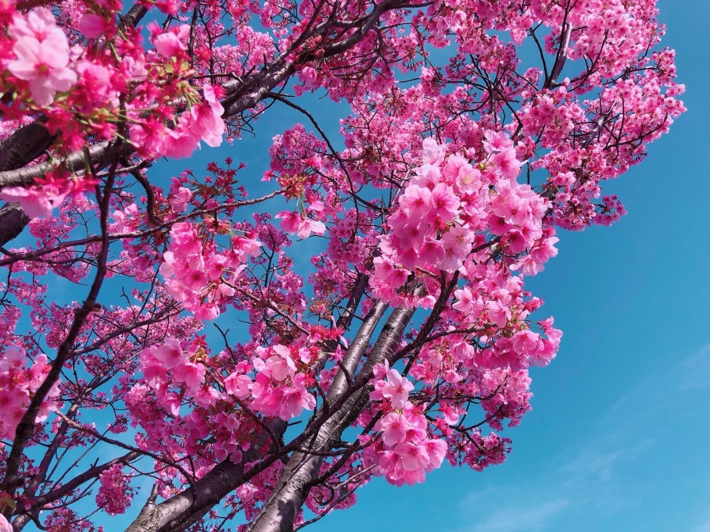
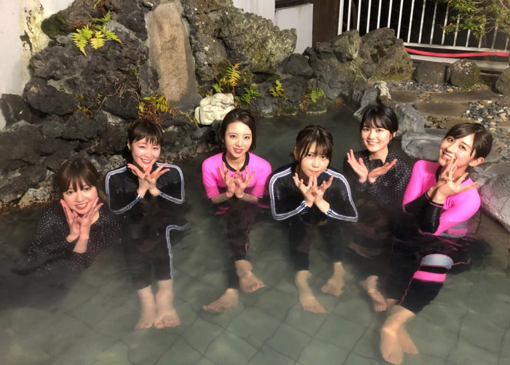
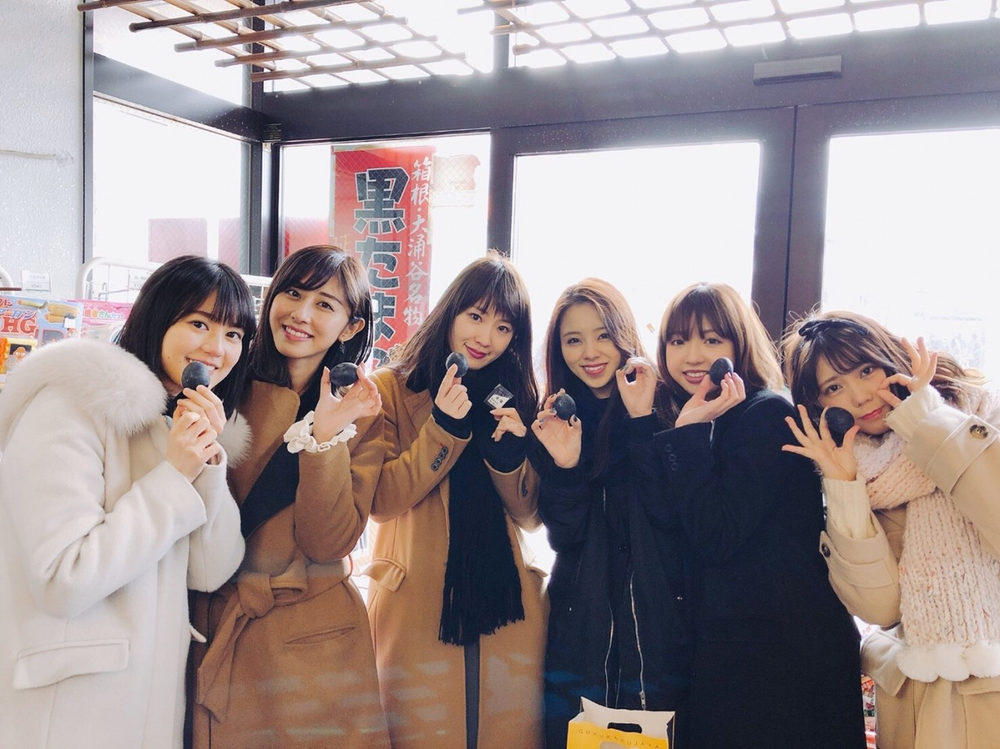
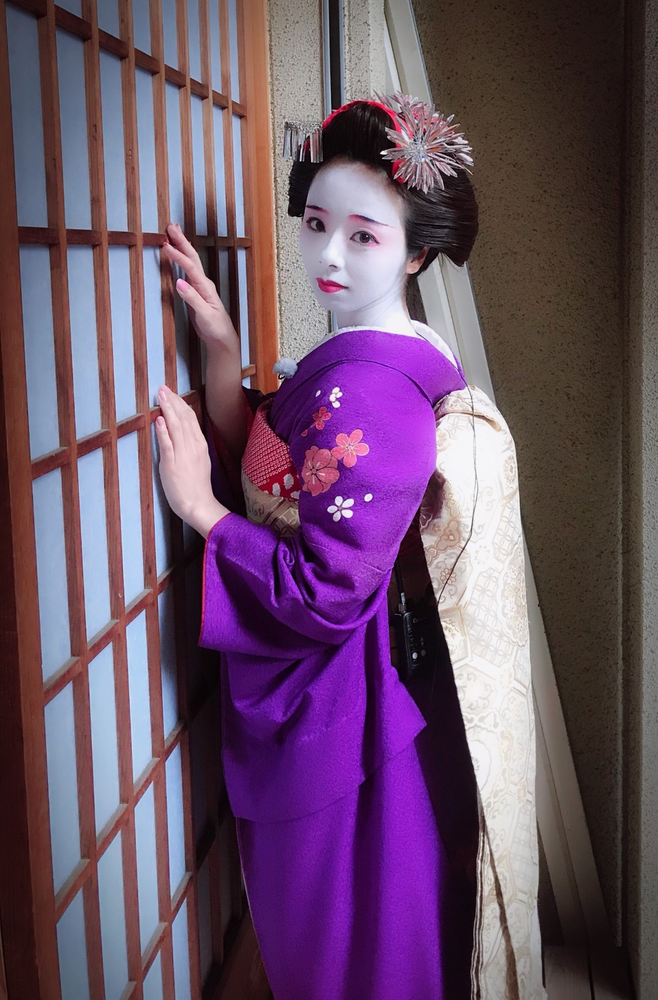
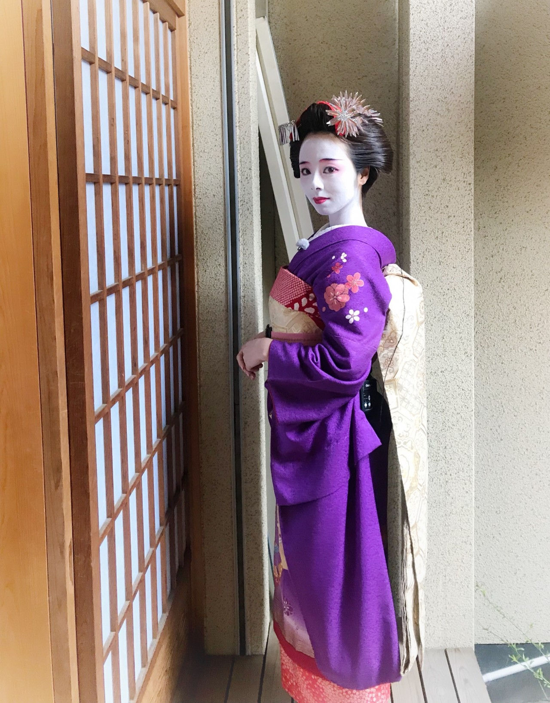

お疲れ様です♡
桜満開ですね(^_^*)
撮影で桜を近くで見ました、綺麗な色。

告知！！！
3月30日「のぎ天2 カラオケ大会」
見てくださいねぇ。
そして何より、
46時間TV本当に楽しかったです。
最後に良い思い出作れて幸せです。
電視台。
電視台では「渋谷ブルース」を弾き語りました。
初めての弾き語り、少し緊張もしたけど、気持ちを込めて歌いました。
どうだったかな？
チューリップ。
チューリップの仲間達と箱根へ。
食べ歩き、箱根登山鉄道、ロープウェイ、水族館、動物ランド、ご飯、温泉...
沢山行ってきました。
チューリップの皆だいすき♡


京都ロケ。
私、まあや、あみ。
「妖怪ストリート」でのロケ。
そして何と言っても、1番楽しかったのが、舞妓さんになれたこと♡
あみとまあやが沢山褒めてくれたから嬉しかったんです。笑
あみに関しては「マニ舞妓さんになりな？本当に。」と、真面目に言ってくるですよ(^_^*)笑
なれないよ。
でもそう言ってもらえて嬉しいどすへ～。


まだ沢山写真あるのでモバメや755の方に貼りますね。
そして日曜日、最後の個別握手会を終えました。
七年間、握手会で沢山の人に勇気を貰い、励まされ、背中を押されました。
ありがとうございました。
でも本当に色々あったな～。とつくづく思います。
どんな事も全部いい思い出ですね♡
と言うことで、読んでくれてありがとうございます。
おやすみなさい。